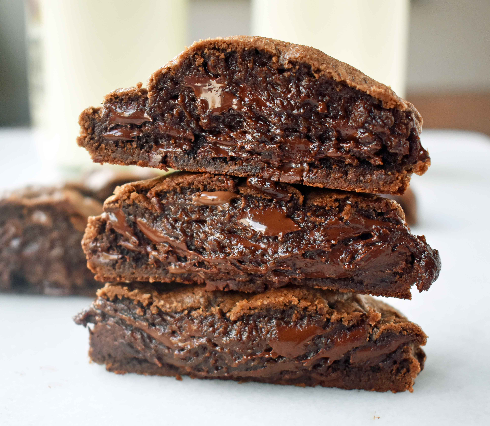

Levain Bakery Dark Chocolate Chip Cookies

Description:
Inspired by Levain Bakery crispy on the outside soft and brownie like on the inside cookies, this recipe is taken from This website
Ingredients:
- 1 cup Cold Butter (cut into small cubes)
- 1 cup Brown Sugar
- 1/2 cup White Sugar
- 2 Eggs
- 1/2 cup Dark chocolate Cocoa Powder
- 1 cup Cake Flour
- 1 1/2 cup All-Purpose Flour
- 1 teaspoon Cornstarch
- 3/4 teaspoon Salt
- 1 1/3 cup Semisweet chocolate Chips
Instructions:
- Preheat oven to 410 degrees.
- In large bowl, cream together cold butter and sugars until light and fluffy, about 4 minutes. Add eggs one at a time, mixing well after each addition.
- Add cocoa, cake flour, all-purpose flour, cornstarch, baking soda, and salt and stir until combined. Stir in semi-sweet chocolate chips.
- Chill dough for 15 minutes.
- Seperate dough into large balls and place on parchment covered cookie sheet. Lightly press on top of the dough to smooth out. If you have a scale, you can make them anywhere from 4.6 oz - 6 oz. You will fit 4-6 cookies on one large cookie sheet. The Dough makes approx 8-12 extra large cookies.
- Bake for 9-11 minutes or until golden brown on top. Let them rest for atleast 10-15 minutes to set.